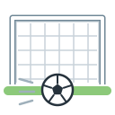
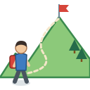

Unit 16
興趣Likes & Hobbies
睇戲, 打波, 唱K, 游水: what you like doing (我鍾意游水), asking 你鍾唔鍾意…呀？, and what you can do (識) and want to do (想).
Learn
Free time
Sport, films, music and more; 鍾意 + verb, 鍾唔鍾意, 識 for can, 想 for want, and making plans with 會.

GameSurvey
Answer a hobby survey from your sheet, note down what people like, and ask the right question: 鍾唔鍾意, 識唔識 or 想唔想?

GameWrite It
Write 山, 相 and 想 stroke by stroke with your finger: trace, then from memory, then 默書 from what you hear.
WritingWriting Sheet
Print a practice sheet: each character stroke by stroke in Hong Kong order, to trace and then write.
GameTone Detective
Hear a hobby and pick its tones. 想 or 上?
SpeakingSay It Back
Record yourself and compare your tones with a native speaker's pitch curve.